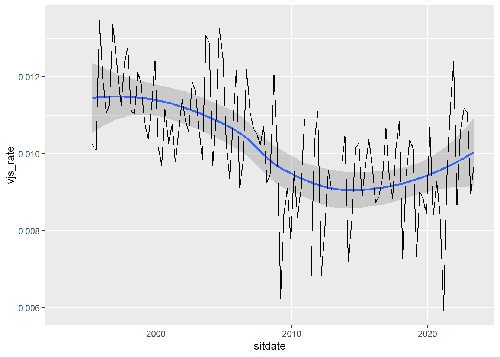
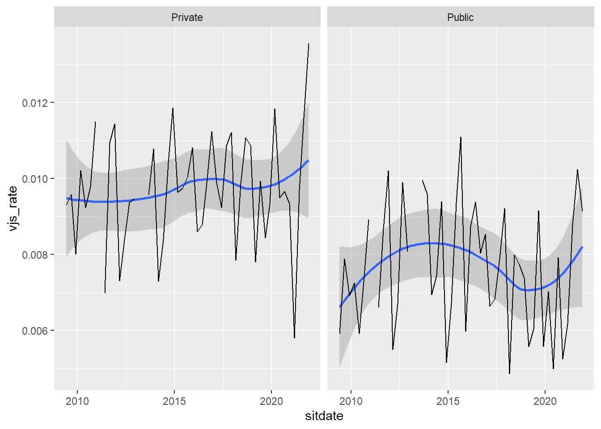

Code
library(ggplot2)
# This script calculates voluntary and involuntary job separations from the
# labour market.
#+ Setup ----
# Connect to Database
con <- DBI::dbConnect(
odbc::odbc(), driver = "PostgreSQL ODBC Driver(Unicode)",
database = "lfs", uid = "lheley", host = "localhost", pwd = "lheley",
port = 5432, maxvarcharsize = 0
)
# Extract Meta Data
study_meta <- con |>
dplyr::tbl("2qlfs_index") |>
dplyr::select(1:4) |>
dplyr::collect() |>
dplyr::left_join(
con |>
dplyr::tbl("study_filename_lu") |>
dplyr::collect() |>
dplyr::rename(SN = study) |>
dplyr::mutate(SN = as.numeric(SN)),
by = "SN"
)
#+ Define Variables ----
# These variables were defined through comparison of the previous
# ONS publications.
# Where the question or possible responses to a question have changed
# the variable is updated.
wnleft <- c("WNEFT112","WNLEFT2")
relft <- c("REDYL112","REDYL132","REDYLFT2")
sector <- "PUBLICR1"
employment <- "ILODEFR1"
age <- "AGE1"
id <- c("PERSID")
lgwt <- c("LGWT","LGWT18", "LGWT20") # This responds to different population weights.
industry <- "INDD07M1"
vars <- c(id, lgwt, wnleft, relft, sector, employment, age, industry)
tbls <- DBI::dbListTables(con)
tbls <- tbls[grepl("sn_", tbls)]
variables <- tbls |>
purrr::map_df(function(tbl){
variables <- con |>
dplyr::tbl(tbl) |>
dplyr::select(tidyselect::any_of(vars)) |>
head() |>
dplyr::collect() |>
names()
tibble::tibble(study = substr(tbl, 4, 9), variables)
})
#+ Select tables the contain the variables we need -----
tbls <- paste0("sn_", variables |>
dplyr::filter(variables %in% vars) |>
dplyr::mutate(variables2 = dplyr::case_when(
variables %in% relft ~ "REDYLFT",
variables %in% wnleft ~ "WNLEFT",
variables %in% lgwt ~ "LGWT",
TRUE ~ variables
)) |>
dplyr::select(-variables) |>
dplyr::mutate(value = 1) |>
tidyr::pivot_wider(names_from = variables2, values_from = value) |>
na.omit() |>
dplyr::select(study) |> dplyr::pull())
#+ Calculate Statistics ------
# Loop through the table.
# Calculate the number of people that reason for leaving was voluntary separation
# Calculate the overall people
# This can be extended to include involuntary job separations
# This code chunk loops through the selected tables
# It selects variables which match our specified variables in 'vars'
# It then renames variables with inconsistent names
# Then filters between 16 and 65
# It recode reason left to determine voluntary job separations
# It calculates whether individual left employmnet in last three months
# It then groups by sector and calculate the weighted and unweighted number of
# voluntary job separates by total sector size
vjs <- tbls |>
purrr::map_df(function(tbl){
sql_tbl <- con |> dplyr::tbl(tbl)
sql_tbl |>
dplyr::select(tidyselect::any_of(vars)) |>
dplyr::rename(REDYLFT = tidyselect::any_of(relft)) |>
dplyr::rename(WNLEFT = tidyselect::any_of(wnleft)) |>
dplyr::rename(LGWT = tidyselect::any_of(lgwt))|>
dplyr::filter(AGE1 >= 16 & AGE1 < 65) |>
dplyr::collect() |>
dplyr::mutate(VJS = dplyr::case_when(
"REDYLFT2" %in% dplyr::tbl_vars(sql_tbl) ~ REDYLFT %in% 4:9,
"REDYL112" %in% dplyr::tbl_vars(sql_tbl) ~ REDYLFT %in% 4:10,
"REDYL132" %in% dplyr::tbl_vars(sql_tbl) ~ REDYLFT %in% c(3, 5:11)
)) |>
dplyr::mutate(LFT3M = WNLEFT == 1 & ILODEFR1 == 1) |>
dplyr::mutate(VJS_3M = VJS & LFT3M) |>
dplyr::mutate(EMP = ILODEFR1 == 1) |>
dplyr::mutate(PUBLIC = PUBLICR1 == 2) |>
dplyr::mutate(PRIVATE = PUBLICR1 == 1) |>
dplyr::mutate(SECTOR = ifelse(PUBLIC, "Public", ifelse(PRIVATE, "Private", NA))) |>
dplyr::group_by(SECTOR) |>
dplyr::summarise(vjs_3m_w = crossprod(LGWT, VJS_3M)[1],
vjs_3m = sum(VJS_3M),
n_w = crossprod(EMP, LGWT)[1],
n = sum(EMP), tbl = tbl)
})
vjs_total <- study_meta |>
dplyr::select(tbl = SN, sitdate = End) |>
dplyr::mutate(tbl = paste("sn", tbl, sep = "_")) |>
dplyr::collect() |>
dplyr::left_join(vjs, by = "tbl") |>
dplyr::group_by(sitdate) |>
dplyr::summarise(vjs_3m_w = sum(vjs_3m_w),
n_w = sum(n_w)) |>
dplyr::mutate(vjs_rate = vjs_3m_w / n_w)
vjs_sector <- study_meta |>
dplyr::select(tbl = SN, sitdate = End) |>
dplyr::mutate(tbl = paste("sn", tbl, sep = "_")) |>
dplyr::collect() |>
dplyr::left_join(vjs, by = "tbl") |>
dplyr::filter(!is.na(SECTOR)) |>
dplyr::group_by(sitdate, sector = SECTOR) |>
dplyr::summarise(vjs_3m_w = sum(vjs_3m_w),
n_w = sum(n_w)) |>
dplyr::mutate(vjs_rate = vjs_3m_w / n_w) `summarise()` has grouped output by 'sitdate'. You can override using the
`.groups` argument.Code
vjs_total$vjs_rate[vjs_total$vjs_rate == 0] <- NA
vjs_sector$vjs_rate[vjs_sector$vjs_rate == 0] <- NA
ggplot(vjs_total) +
geom_line(aes(sitdate, vjs_rate))Warning: Removed 66 rows containing missing values (`geom_line()`).
Code
ggplot(vjs_sector) +
geom_line(aes(sitdate, vjs_rate)) +
facet_wrap(~sector)
Code
DBI::dbDisconnect(con)